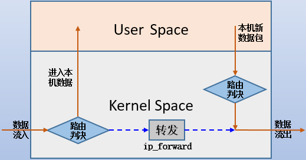
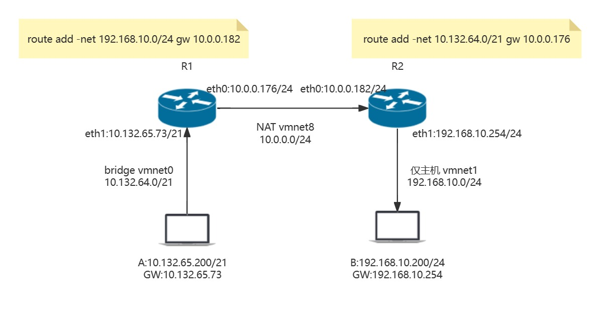
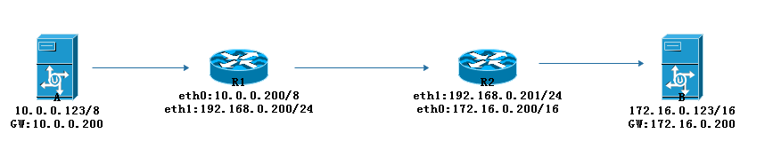
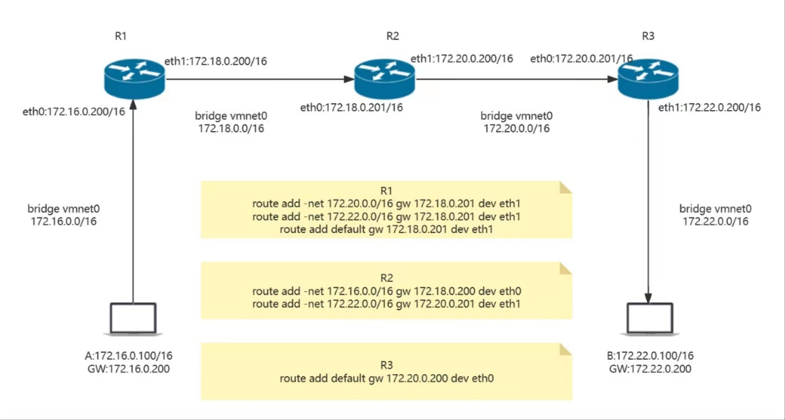
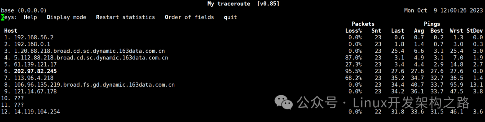
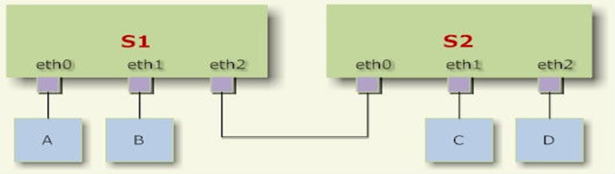
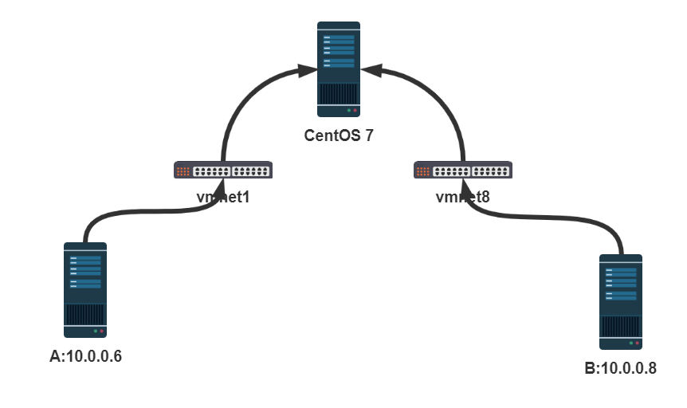
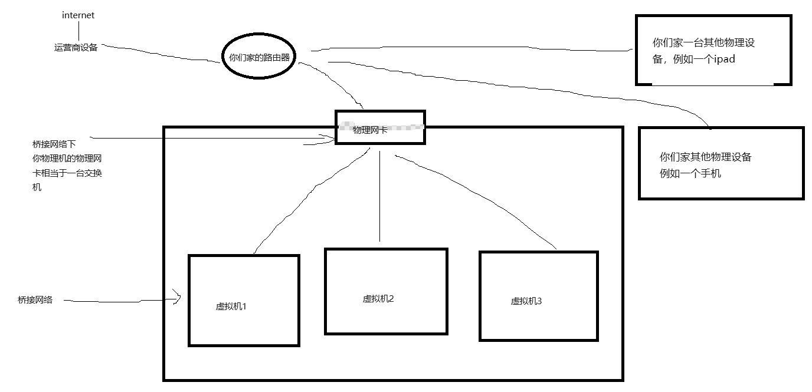

一、网络配置 网络配置文件 IP、MASK、GW、DNS相关的配置文件 1 2 3 4 5 6 7 8 9 10 11 12 13 14 15 16 17 18 19 20 21 22 /etc/sysconfig/network-scripts/ifcfg-IFACE /etc/netplan/*.yaml TYPE NAME DEVICE HWADDR UUID BOOTPROTO IPADDR NETMASK PREFIX GATEWAY DNS1 DNS2 DOMAIN ONBOOT USERCTL PEERDNS NM_CONTROLLED
配置当前主机的主机名 CentOS 6 之前版本
1 2 3 /etc/sysconfig/network HOSTNAME= 在文件里修改完以后，还需要执行hostname xxxx才可以保存
CentOS 7 以后版配置文件:
1 2 3 /etc/hostname 默认没有此文件，通过DNS反向解析获取主机名，主机名默认为：localhost.localdomain 删除文件/etc/hostname，恢复主机名localhost.localdomain
Ubuntu
DNS域名解析 1 2 3 4 5 /etc/resolv.conf nameserver DNS_SERVER_IP1 nameserver DNS_SERVER_IP2 nameserver DNS_SERVER_IP3 search DOMAIN
常见公共DNS
1 2 3 4 5 6 7 8 9 10 11 12 13 14 15 16 17 18 19 20 21 180.76.76.76 百度 223.5.5.5 阿里 223.6.6.6 阿里 119.29.29.29 腾讯 119.28.28.28 腾讯 114.114.114.114 电信 114.114.115.115 电信 1.2.4.8 CNNIC 210.2.4.8 CNNIC 240c::6666 CNNIC 240c::6644 CNNIC 80.80.80.80 Freenom World 80.80.81.81 Freenom World 8.8.8.8 Google 8.8.4.4 Google 1.1.1.1 Cloudflare 117.50.11.11 OneDNS 117.50.22.22 OneDNS 52.80.66.66 OneDNS 117.50.10.10 OneDNS 52.80.52.52 OneDNS
/etc/hosts 和 /etc/resolv.conf 的区别
/etc/hosts 主要用于本地主机名到 IP 地址的静态映射，而 /etc/resolv.conf 主要用于配置 DNS 解析器的设置，指定 DNS 服务器和其他相关选项。/etc/hosts 的查询优先级高于 DNS，因为它是在本地执行的，而 /etc/resolv.conf 则是指示系统使用哪些 DNS 服务器进行域名解析。
修改 /etc/hosts和DNS的优先级 1 2 3 4 5 6 7 8 9 vim /etc/hosts 10.0.0.8 www.baidu.com vim /etc/sysconfig/nerwork-scripts/ifcfg-eth0 .... DOMAIN=magedu.com .... 由于hosts比DNS优先级高，所以在/etc/hosts将www.baidu.com指向的IP地址为10.0.0.8后，去ping www.baidu.com得出的IP地址是10.0.0.8，就不是原先百度的地址
修改
1 2 vim etc/nsswitch.conf hosts: files dns
路由相关的配置文件 1 2 3 4 5 6 7 8 9 10 /etc/sysconfig/network-scripts/route-IFACE 两种风格： (1) TARGET via GW 如：10.0.0.0/8 via 172.16.0.1 (2) 每三行定义一条路由 ADDRESS#=TARGET NETMASK#=mask GATEWAY#=GW
范例: CentOS7 创建/etc/sysconfig/static-routes文件添加持久静态路由
1 2 3 4 5 6 7 8 9 10 11 12 13 14 15 16 17 18 19 20 21 22 23 24 25 26 27 28 29 30 31 32 [root@centos7 ~]#grep -A 3 "/etc/sysconfig/static-routes" /etc/init.d/network if [ -f /etc/sysconfig/static-routes ]; then if [ -x /sbin/route ]; then grep "^any" /etc/sysconfig/static-routes | while read ignore args ; do /sbin/route add -$args done else [root@centos7 ~]#route -n Kernel IP routing table Destination Gateway Genmask Flags Metric Ref Use Iface 0.0.0.0 10.0.0.2 0.0.0.0 UG 100 0 0 eth0 10.0.0.0 0.0.0.0 255.255.255.0 U 100 0 0 eth0 [root@centos7 ~]#vim /etc/sysconfig/static-routes [root@centos7 ~]#cat /etc/sysconfig/static-routes any net 192.168.1.0/24 gw 10.0.0.254 any net 192.168.2.0/24 gw 10.0.0.254 [root@centos7 ~]#systemctl restart network [root@centos7 ~]#route -n Kernel IP routing table Destination Gateway Genmask Flags Metric Ref Use Iface 0.0.0.0 10.0.0.2 0.0.0.0 UG 100 0 0 eth0 10.0.0.0 0.0.0.0 255.255.255.0 U 100 0 0 eth0 192.168.1.0 10.0.0.254 255.255.255.0 UG 0 0 0 eth0 192.168.2.0 10.0.0.254 255.255.255.0 UG 0 0 0 eth0
网卡配置 注意：在虚拟机加网卡开着机加，不要关机加，不然会损坏虚拟机
网卡名称 CentOS 6 之前版本网卡名称 接口命名方式：CentOS 6
1 2 以太网：eth[0,1,2,...] ppp：ppp[0,1,2,...]
网络接口识别并命名相关的udev配置文件
1 /etc/udev/rules.d/70-persistent-net.rules
查看网卡
1 2 dmesg |grep –i eth ethtool -i eth0
卸载网卡驱动
1 2 modprobe -r e1000 rmmod e1000
装载网卡驱动
范例：临时修改网卡名称
1 2 3 [root@centos6 ~]#ip link set eth0 down [root@centos6 ~]#ip link set eth0 name abc [root@centos6 ~]#ip link set abc up
范例：手工配置地址
1 [root@centos6 ~]#ip a a 10.0.0.6/24 dev eth0
CentOS 7 以上版网卡名称 systemd对网络设备的命名方式
如果Firmware或BIOS为主板上集成的设备提供的索引信息可用，且可预测则根据此索引进行命名，如：eno1
如果Firmware或BIOS为PCI-E扩展槽所提供的索引信息可用，且可预测，则根据此索引进行命名，如：ens1
如果硬件接口的物理位置信息可用，则根据此信息命名，如：enp2s0
如果用户显式启动，也可根据MAC地址进行命名，如：enx2387a1dc56
上述均不可用时，则使用传统命名机制
基于BIOS支持启用biosdevname软件
1 2 内置网卡：em1,em2 pci卡：pYpX Y：slot ,X:port
网卡组成格式
1 2 3 4 5 6 7 en : Ethernet 有线局域网wl : wlan 无线局域网ww : wwan无线广域网o<index>: 集成设备的设备索引号 s<slot>: 扩展槽的索引号 x<MAC>: 基于MAC地址的命名 p<bus>s<slot>: enp2s1
使用传统命名方式
1 2 3 4 5 6 7 8 9 10 11 12 13 14 15 16 17 18 19 20 21 22 23 24 25 26 Rocky8.6 1 编辑文件 /etc/default/grub GRUB_CMDLINE_LINUX="*quiet net.ifnames=0 biosdevname=0" 2 为grub2生成其配置文件 基于UEFI模式引导的系统 基于BIOS模式引导的系统 3 重启 reboot Ubuntu22.04 1 编辑文件 /etc/default/grub GRUB_CMDLINE_LINUX=" net.ifnames=0" 2 重新读取配置文件 grub-mkconfig -o /boot/grub/grub.cfg 2 重启 reboot
自定义网卡名
1 GRUB_CMDLINE_LINUX="... net.ifnames.prefix=<required prefix>"
范例：自定义网卡名
1 2 3 4 5 6 7 8 9 10 11 12 13 14 15 16 [root@centos8 ~]# vi /etc/default/grub GRUB_CMDLINE_LINUX="net.ifnames.prefix=wang" [root@centos8 ~]# grub2-mkconfig -o /boot/grub2/grub.cfg [root@centos8 ~]# reboot [root@centos8 ~]# ip link 1: lo: <LOOPBACK,UP,LOWER_UP> mtu 65536 qdisc noqueue state UNKNOWN mode DEFAULT group default qlen 1000 link /loopback 00:00:00:00:00:00 brd 00:00:00:00:00:00 2: wang0: <BROADCAST,MULTICAST,UP,LOWER_UP> mtu 1500 qdisc fq_codel state UP mode DEFAULT group default qlen 1000 link /ether 00:0c:29:15:9b:83 brd ff:ff:ff:ff:ff:ff 3: wang1: <BROADCAST,MULTICAST,UP,LOWER_UP> mtu 1500 qdisc fq_codel state UP mode DEFAULT group default qlen 1000 link /ether 00:0c:29:15:9b:8d brd ff:ff:ff:ff:ff:ff
网卡地址配置 配置选择
1 2 3 4 5 6 7 8 9 10 11 12 13 14 15 16 17 18 19 20 21 22 23 DEVICE=ens33 NAME=ens33 BOOTPROTO=static IPADDR=10.193.12.23 NETMASK=255.255.255.0 | PREFIX=24 GATEWAY=10.193.12.254 DNS1=10.1.26.188 DOMAIN=magedu.com TYPE=Ethernet UUID=ef482e1b-4f2f-4d23-ae65-784122f24201 ONBOOT=yes BROWSER_ONLY=no PROXY_METHOD=none DEFROUTE=yes IPV4_FAILUREFATAL=no IPV6INIT=yes IPV6AUTOCONF=yes IPV6_DEFROUTE=yes IPV6FAILURE_FATAL=no IPV6ADDR_GEN_MODE=stable-privacy
范例
1 2 3 4 5 6 7 8 9 10 11 12 13 14 15 16 17 18 19 20 21 22 23 24 25 26 27 28 29 30 31 32 33 34 35 36 37 38 39 40 41 42 43 44 45 46 47 48 49 50 51 52 53 54 55 56 57 1 进入目录 [root@centos ~]#cd /etc/sysconfig/network-scripts 2 配置文件 [root@centos network-scripts]#vim ifcfg-eth0 DEVICE=eth0 NAME=eth0 BOOTPROTO=dhcp [root@centos network-scripts]#nmcli con reload [root@centos network-scripts]#nmcli con up eth0 [root@centos ~]#systemctl restart network DEVICE=eth0 NAME=eth0 BOOTPROTO=static | none IPADDR=10.0.0.183 NETMASK=255.255.255.0 | PREFIX=24 GATEWAY=10.0.0.2 DNS1=10.0.0.2 DNS2=100.76.76.76 [root@centos network-scripts]#nmcli con reload [root@centos network-scripts]#nmcli con up eth0 [root@centos ~]#systemctl restart network [root@rocky86 network-scripts]# nmcli connection [root@centos ~]#route -n Kernel IP routing table Destination Gateway Genmask Flags Metric Ref Use Iface 0.0.0.0 10.0.0.2 0.0.0.0 UG 100 0 0 eth0 10.0.0.0 0.0.0.0 255.255.255.0 U 100 0 0 eth0 [root@centos ~]#cat /etc/resolv.conf nameserver 10.0.0.2 nameserver 100.76.76.76 DEVICE=eth0 NAME=eth0 BOOTPROTO=static IPADDR=10.0.0.183 PREFIX=24 IPADDR1=10.0.0.184 PREFIX1=24 IPADDR2=10.0.0.185 PREFIX2=24 GATEWAY=10.0.0.2 DNS1=10.0.0.2 DNS2=100.76.76.76
域后缀
1 2 3 4 5 6 7 8 9 10 11 12 13 14 15 16 17 18 19 20 21 22 [root@rocky86 network-scripts]# vim ifcfg-eth1 DEVICE=eth1 NAME=con-eth1 IPADDR=10.0.0.88 PREFIX=24 GATEWAY=10.0.0.2 DNS1=10.0.0.2 DNS2=114.114.114.114 DOMAIN=magedu.com [root@rocky86 network-scripts]# cat /etc/resolv.conf search localdomain magedu.com nameserver 10.0.0.2 nameserver 114.114.114.114 [root@rocky86 network-scripts]# ping www PING www.magedu.com (160.121.140.246) 56(84) bytes of data. 64 bytes from 160.121.140.246 (160.121.140.246): icmp_seq=1 ttl=128 time =54.3 ms ......
网卡别名 将多个IP地址绑定到一个NIC上
每个IP绑定到独立逻辑网卡，即网络别名，命名格式： ethX:Y，如：eth0:1 、eth0:2、eth0:3
范例：ifconfig 命令
1 2 ifconfig eth0:0 192.168.1.100/24 up ifconfig eth0:0 down
范例：ip 命令
1 2 3 4 ip addr add 172.16.1.1/16 dev eth0 ip addr add 172.16.1.2/16 dev eth0 label eth0:0 ip addr del 172.16.1.2/16 dev eth0 label eth0:0 ip addr flush dev eth0 label eth0:0
为每个设备别名生成独立的接口配置文件，格式为：ifcfg-ethX:xxx
范例： 给 lo 网卡加别名(此方式不适用于CentOS8)
1 2 3 4 5 6 7 8 9 10 11 12 13 14 15 16 17 18 19 20 21 [root@centos7 network-scripts]#cat ifcfg-lo:1 DEVICE=lo:1 IPADDR=137.0.0.1 NETMASK=255.0.0.0 NETWORK=137.0.0.0 BROADCAST=137.255.255.255 ONBOOT=yes NAME=loopback1 [root@centos7 network-scripts]#ip addr show lo 1: lo: <LOOPBACK,UP,LOWER_UP> mtu 65536 qdisc noqueue state UNKNOWN group default qlen 1000 link /loopback 00:00:00:00:00:00 brd 00:00:00:00:00:00 inet 127.0.0.1/8 scope host lo valid_lft forever preferred_lft forever inet 137.0.0.1/8 brd 137.255.255.255 scope global lo:1 valid_lft forever preferred_lft forever inet6 ::1/128 scope host valid_lft forever preferred_lft forever
注意：
建议 CentOS 6 关闭 NetworkManager 服务
网卡别名必须使用静态地址
网卡模式 繁杂模式：在默认情况下，网卡只会接收发给自己MAC地址的数据帧，其它的数据帧则会被过滤丢弃。但是当我们把网卡设置为繁杂模式时，网卡将接收通过该网卡的所有数据帧，无论这些数据帧的目标MAC地址是什么。这个特性在一些特定的情况下很有用，例如网络监听（sniffing）和网络调试。
多播模式：允许一个网络节点将数据发送到多个接收节点，但又不像广播那样向所有网络节点发送。多播通过使用特定的IP地址范围（224.0.0.0到239.255.255.255）和MAC地址范围，来标示一组特定的接收节点。当发送节点发送数据时，只有加入了相应多播组的节点会接收和处理这份数据，其它未加入的节点则会忽略这份数据。多播技术可有效减少网络流量，提升网络的利用效率，因此在一些需要数据共享的场景，例如视频直播和在线游戏，多播技术得到了广泛的应用。
1 2 3 4 5 ifconfig eth0 promisc ifconfig eth0 -promisc ifconfig ens33 multicast ifconfig ens33 -multicast
Linux上的网络 Linux处理数据包的过程

当向外界主机发送数据时，在它从网卡流入后需要对它做路由决策，根据其目标决定是流入本机的用户空间还是在内核空间就直接转发给其他主机
1 2 3 4 5 6 7 8 9 则数据会从内核空间进入用户空间(被应用程序接收并处理)； 此时如果本机用户空间的应用程序不需要产生新的数据包对外发送，那便不再涉及到从某个网卡流出数据； 但是如果本机用户空间的应用程序需要产生新的数据包对外发送，那便需要从某个网卡流出数据，但在流出之前，也需要做路由决策：根据目标决定从哪个网卡流出。 则必然涉及到从某个网卡流出，此时数据包必须从流入网卡完整地转发给流出网卡，这要求Linux主机能够完成这样的转发。但Linux主机默认未开启ip_forward功能，这使得数据包无法转发而被丢弃。 ps：Linux主机和路由器不同，路由器本身就是为了转发数据包，所以路由器内部默认就能在不同网卡间转发数据包，而Linux主机默认则不能转发。若要开启linux主机的转发功能，有很多方式，如下所示
临时开启linux主机的路由转发功能，重启网络服务则失效
1 2 3 4 5 echo 1 > /proc/sys/net/ipv4/ip_forward sysctl -w net.ipv4.ip_forward=1
若要永久生效，则应该写入配置文件
1 2 3 4 5 6 7 将/etc/sysctl.conf文件中的"net.ipv4.ip_forward" 值改为1即可 systemd管理了太多的功能，sysctl的配置文件也分化为多个，包括/etc/sysctl.conf、/etc/sysctl.d/*.conf和/usr/lib/sysctl.d/*.conf，并且这些文件中默认都没有net.ipv4.ip_forward项。当然，直接将此项写入到这些配置文件中也都是可以的，建议写在/etc/sysctl.d/*.conf中，这是systemd提供自定义内核修改项的目录。例如： echo "net.ipv4.ip_forward=1" > /etc/sysctl.d/ip_forward.conf
注意了注意注意了：只有当本机被别人当成网关并且本机开启路由转发功能时，别人发来的请求包，本机才会帮忙转发，这一点很重要，请务必记住
网关 Linux上分为3种路由：
路由是区分优先级的：若Linux上到某主机有多条路由可以选择，这时候会挑选优先级高的路由
1 2 3 4 5 6 7 8 9 10 大前提：主机范围越小、越精确、优先级越高，而缩小主机范围的恰恰就是子网掩码，掩码越长范围越小、越精确、优先级越高 优先级区分： 也就是说，掩码位长的路由条目优先级一定比掩码位短的优先级高，所以主机路由的优先级最高， 然后是直连网络(即同网段)的路由(也算是网络路由)次之， 再是网络路由， 最后才是默认路由即网关。
例如1：在本机查看到路由表如下
1 2 3 4 5 6 7 8 [root@egon ~]# route -n Kernel IP routing table Destination Gateway Genmask Flags Metric Ref Use Iface 0.0.0.0 192.168.100.2 0.0.0.0 UG 100 0 0 eth0 172.16.10.0 0.0.0.0 255.255.255.0 U 100 0 0 eth1 192.168.0.0 192.168.100.70 255.255.0.0 UG 0 0 0 eth0 192.168.100.0 0.0.0.0 255.255.255.0 U 100 0 0 eth0 192.168.100.78 0.0.0.0 255.255.255.255 UH 0 0 0 eth0
在本机ping 192.168.5.20
1 2 3 4 5 255.255.255.255 > 255.255.255.0 > 255.255.0.0 > 0.0.0.0 于是先对应192.168.100.78发现无法匹配，然后比对192.168.100.0，发现也无法匹配， 接着再匹配192.168.0.0这条网络路由条目，发现能匹配，所以选择该路由条目，从eth0发出数据包
例2：如下路由表。由于两块网卡eth0和eth1都是192.168.100.0/24网段地址，所以它们的路由条目在掩码长度的匹配上是相同的，但是和eth0直连的网段主机通信时，肯定会选择eth0这条路由条目（即第二条），因为eth1和该网段主机隔了一个eth0，距离增加了1。
1 2 3 4 5 6 [root@egon ~]# route -n Kernel IP routing table Destination Gateway Genmask Flags Metric Ref Use Iface 0.0.0.0 192.168.100.2 0.0.0.0 UG 100 0 0 eth0 192.168.100.0 0.0.0.0 255.255.255.0 U 100 0 0 eth0 192.168.100.0 0.0.0.0 255.255.255.0 U 101 0 0 eth1
ICMP 范例：修改IP报文段的TTL值
1 echo 100 > /proc/sys/net/ipv4/ip_default_ttl
范例：发现IP冲突的主机
1 2 3 4 5 6 7 8 [root@centos8 ~]#arping 10.0.0.6 ARPING 10.0.0.6 from 10.0.0.8 eth0 Unicast reply from 10.0.0.6 [00:0C:29:E0:2F:37] 0.779ms Unicast reply from 10.0.0.6 [00:0C:29:32:80:38] 0.798ms Unicast reply from 10.0.0.6 [00:0C:29:32:80:38] 0.926ms Unicast reply from 10.0.0.6 [00:0C:29:32:80:38] 0.864ms ^CSent 3 probes (1 broadcast(s)) Received 4 response(s)
范例: 禁用IPv6
1 2 3 4 5 6 7 8 9 10 11 12 13 14 15 16 17 18 19 20 21 22 23 24 25 26 27 28 [root@centos8 ~]#vim /etc/sysctl.conf net.ipv6.conf.all.disable_ipv6 = 1 net.ipv6.conf.default.disable_ipv6 = 1 [root@centos8 ~]#sysctl -p [root@centos8 ~]#vim /etc/ssh/sshd_config AddressFamily inet [root@centos8 ~]#systemctl restart sshd [root@centos8 ~]#vim /etc/postfix/main.cf inet_interfaces = 127.0.0.1 [root@centos8 ~]#systemctl restart postfix [root@centos8 ~]#ss -ntl State Recv-Q Send-Q Local Address:Port Peer Address:Port LISTEN 0 128 0.0.0.0:22 0.0.0.0:* LISTEN 0 100 127.0.0.1:25 0.0.0.0:*
Ubuntu网络配置 主机名 1 2 3 4 5 6 7 8 9 10 11 12 13 root@ubuntu1804:~# hostnamectl set-hostname ubuntu1804.magedu.org root@ubuntu1804:~# cat /etc/hostname ubuntu1804.magedu.org root@ubuntu1804:~# hostname ubuntu1804.magedu.org root@ubuntu1804:~# echo $HOSTNAME ubuntu1804 root@ubuntu1804:~# exit logout wang@ubuntu1804:~$ sudo -i root@ubuntu1804:~# echo $HOSTNAME ubuntu1804.magedu.org
网卡名称 1 2 3 4 5 6 7 8 9 10 11 12 13 14 15 16 root@ubuntu1804:~#vi /etc/default/grub GRUB_CMDLINE_LINUX="net.ifnames=0" root@ubuntu1804:~# sed -i.bak '/^GRUB_CMDLINE_LINUX=/s#"$#net.ifnames=0"#' /etc/default/grub root@ubuntu1804:~# grub-mkconfig -o /boot/grub/grub.cfg root@ubuntu1804:~# update-grub root@ubuntu1804:~# grep net.ifnames /boot/grub/grub.cfg root@ubuntu1804:~# reboot
网卡配置 配置选项
1 2 3 4 5 6 dhcp4 addresses gateway4 nameservers version search
范例
1 2 3 4 5 6 addresses: [10.0.0.6/24,10.0.0.66/24] addresses: - 10.0.0.6/24 - 10.0.0.66/24
配置自动获取IP 网卡配置文件采用YAML格式,必须以 /etc/netplan/XXX.yaml 文件命名方式存放
可以每个网卡对应一个单独的配置文件,也可以将所有网卡都放在一个配置文件里
1 2 3 4 5 6 7 8 9 10 11 12 root@ubuntu1804:~# cat /etc/netplan/01-netcfg.yaml network: version: 2 renderer: networkd ethernets: eth0: dhcp4: yes root@ubuntu1804:~#netplan apply
配置静态IP 1 2 3 4 5 6 7 8 9 10 11 12 13 14 15 16 17 18 19 20 21 22 23 24 25 26 27 28 29 30 31 32 33 34 35 36 network: version: 2 renderer: networkd ethernets: eth0: addresses: - 10.0.0.129/24 gateway4: 10.0.0.2 nameservers: search: [baidu.com, baidu.org] addresses: [10.0.0.2,180.76.76.76] network: version: 2 renderer: networkd ethernets: eth0: addresses: - 10.0.0.129/24 eth1: addresses: [10.0.0.128/24， 1.1.1.1/24， 2.2.2.2/24] gateway4: 10.0.0.2 nameservers: search: [baidu.com] addresses: - 223.6.6.6 - 180.76.76.76
查看ip和gateway
1 2 root@ubuntu1804:~#ip addr root@ubuntu1804:~#route -n
查看DNS
1 2 root@ubuntu2004:~# resolvectl status root@ubuntu1804:~# systemd-resolve --status
Rocky9网络配置 NetworkManager和network服务 network服务和NetworkManager是两种不同的网络管理工具，每种工具都有自己的特点和适用场景。
1、network服务：它是基于传统的Linux网络管理方法，即手动配置网络接口和服务。在使用network服务时，
管理员需要编辑/etc/sysconfig/network-scripts/目录下的ifcfg文件来配置网络接口。
network服务在系统启动时读取这些配置文件，并应用这些设置。network服务的优势在于其稳定性和可预测性，特别适合服务器环境。
2、NetworkManager：它是一个更现代的网络管理工具，可以自动管理其他网络接口和服务，
主要用于桌面环境。NetworkManager可以管理各种类型的网络连接，例如有线网络、无线网络和VPN等，
并在网络环境改变时动态更新网络配置。通常情况下，这两种服务不会同时运行，因为它们可能会产生冲突。
3、但是在CentOS 9中，NetworkManager已经成为默认的网络管理工具，而network服务已被移除。
也就是说，你需要使用NetworkManager来管理你的网络接口和连接。这相比早期的CentOS版本，
使得网络配置更加灵活和自动化，特别是对于经常需要切换网络环境的桌面用户来说。
但是，这也可能需要服务器管理员熟悉新的网络管理方法。
1 2 3 cenetos7.9中我们直接关闭掉它，而使用network服务，而在centos9中则只能用NetworkManager [root@egon ~]# systemctl stop NetworkManager [root@egon ~]# systemctl disable NetworkManager
配置静态ip centos9中修改的则是/etc/NetworkManager/system-connections/下的文件
详见：https://rockylinux.cn/notes/rocky-linux-9-network-configuration.html
用命令直接设置静态ip
1 2 3 4 5 6 7 nmcli con mod ens33 ipv4.addresses "192.168.1.100/24" nmcli con mod ens33 ipv4.gateway "192.168.1.1" nmcli con mod ens33 ipv4.dns "8.8.8.8,8.8.4.4" nmcli con mod ens33 ipv4.method manual nmcli con down ens33 nmcli con up ens33
修改配置文件
1 2 3 4 5 6 7 8 9 10 11 12 13 14 15 16 17 18 19 20 21 22 [connection] id =ens18uuid=7f49fd62-02d9-323e-8f35-0c8249647a74 type =ethernetautoconnect-priority=-999 interface-name=ens18 timestamp=1669365850 [ethernet] [ipv4] address1=192.168.11.172/24,192.168.11.254 dns=114.114.114.114;223.6.6.6; dns-search=rockylinux.cn;rockylinux.org; method=manual [ipv6] addr-gen-mode=eui64 method=disabled [proxy]
二、网络配置命令 ifconfig 命令 来自于net-tools包
1 2 3 4 5 6 7 8 9 10 11 12 13 14 15 16 17 18 19 20 21 22 23 24 25 26 27 28 29 30 31 32 33 34 35 36 37 38 39 40 41 42 43 44 45 46 47 48 [root@centos8 ~]#ifconfig eth0 up [root@centos8 ~]#ifconfig eth0 down [root@centos8 ~]#ifconfig eth0 10.0.0.111/24 [root@centos8 ~]#ifconfig eth0:1 172.16.0.8/24 [root@centos8 ~]#ifconfig -s [root@centos8 ~]#ifconfig -s eth0 [root@centos8 ~]#ifconfig eth0 0 [root@egon ~]# ifconfig ens33 ens33: flags=4163<UP,BROADCAST,RUNNING,MULTICAST> mtu 1500 // UP：表示“接口已启用”。 // BROADCAST ：表示“主机支持广播”。 // RUNNING：表示“接口在工作中”。 // MULTICAST：表示“主机支持多播”。 // 可以了解一下繁杂模式：https://www.cnblogs.com/linhaifeng/articles/13949611.html inet 192.168.12.42 netmask 255.255.255.0 broadcast 192.168.12.255 inet6 fe80::499e:c2c1:f5ed:3900 prefixlen 64 scopeid 0x20<link > ether 00:0c:29:86:f8:59 txqueuelen 1000 (Ethernet) RX packets 5708 bytes 1061424 (1.0 MiB) RX errors 0 dropped 833 overruns 0 frame 0 TX packets 102 bytes 16768 (16.3 KiB) TX errors 0 dropped 0 overruns 0 carrier 0 collisions 0
route命令 路由表管理命令
路由：路径的选择
路由表：导航，地图，但是不仅仅在路由器有，在任何通信的主机都有
路由表构成
Destination：一般来说是到达目标网络的网段地址，即不会精确到一台机器的IP地址，只能是这台机器所在的网段
Genmask:目标网络对应的netmask
iface接口： 接口，要到达本路由记录的目标网络，需要从当前设备的哪个出口发送数据报文
gateway网关：如果本机与目标网络不在同一个网段，需要将数据包发送到下一个路由器邻近本机接口的接口的IP，即网关；如果目标网络和本机在同一个网段，则无需配置网关，gateway是0.0.0.0
Metric花费： 此值越小，路由记录的优先级越高
三种路由记录
主机路由：Destination为主机的IP地址，Genmask为255.255.255.255（不常用）
网络路由：Destination为目标网络的网段地址
默认路由：Destination为0.0.0.0，Genmask为0.0.0.0，优先级最低；比如路由表只有10网段和0.0.0.0,10网段的IP地址走10网段配置的路，不属于10网段的IP地址只能走0.0.0.0配置的路
添加路由
1 route add [-net|-host|default] target [netmask Nm] [gw GW] [[dev] If]
删除路由
1 2 3 4 5 6 7 8 9 10 11 12 13 14 15 16 17 18 19 20 21 22 23 24 25 26 27 28 29 30 31 route del [-net|-host] target [gw Gw] [netmask Nm] [[dev] If] 如果本机eth1这个网卡有172.16.10.0/24这个网段的IP,默认就会产生一条路由条目 172.16.10.0 0.0.0.0 255.255.255.0 U 100 0 0 eth1 169.254.0.0/24 是保留网关 192.168.100.2 是配置的网关 [root@egon ~]# route -n Kernel IP routing table Destination Gateway Genmask Flags Metric Ref Use Iface 0.0.0.0 192.168.100.2 0.0.0.0 UG 100 0 0 eth0 172.16.10.0 0.0.0.0 255.255.255.0 U 100 0 0 eth1 192.168.0.0 192.168.100.70 255.255.0.0 UG 0 0 0 eth0 192.168.100.0 0.0.0.0 255.255.255.0 U 100 0 0 eth0 192.168.100.78 0.0.0.0 255.255.255.255 UH 0 0 0 eth0 各字段含义 U 表示该路由处于up状态、该路由可用 G 表示通过网关，路由项指向了一个网关 H 表示路由项指向一个主机，而非整个网络 对于CentOS 6以上的系统，请忽略Metric和Ref两列，它们已经不被内核使用，只是有些路由软件可能会用上。
范例
1 2 3 4 5 6 7 8 9 10 11 12 13 14 15 16 17 18 19 20 21 22 23 24 25 26 27 28 29 30 [root@centos8 ~]#route Kernel IP routing table Destination Gateway Genmask Flags Metric Ref Use Iface default _gateway 0.0.0.0 UG 100 0 0 eth0 10.0.0.0 0.0.0.0 255.255.255.0 U 100 0 0 eth0 [root@centos8 ~]#route -n Kernel IP routing table Destination Gateway Genmask Flags Metric Ref Use Iface 0.0.0.0 10.0.0.2 0.0.0.0 UG 100 0 0 eth0 10.0.0.0 0.0.0.0 255.255.255.0 U 100 0 0 eth0 route add -host 192.168.1.3 gw 172.16.0.1 dev eth0 route add -net 192.168.0.0 netmask 255.255.255.0 gw 172.16.0.1 dev eth0 route add -net 192.168.0.0/24 gw 172.16.0.1 dev eth0 route add -net 192.168.8.0/24 dev eth1 metric 200 route add -net 0.0.0.0 netmask 0.0.0.0 gw 172.16.0.1 route add -net 0.0.0.0/0 gw 172.16.0.1 route add default gw 172.16.0.1 route del -host 192.168.1.3 route del -net 192.168.0.0 netmask 255.255.255.0
配置路由表

配置
主机
角色
网卡
IP地址
系统
主机1
路由器R1
NAT
10.0.0.176
rocky86
桥接
10.132.65.73
主机2
路由器R2
NAT
10.0.0.182
rocky86
仅主机
192.168.10.254
主机3
客户端A
桥接
10.132.65.200
ubuntu2004
主机4
客户端B
仅主机
192.168.10.200
ubuntu2004
说明
主机1配置桥接，NAT两块网卡，充当路由
主机2配置仅主机，NAT两块网卡，充当路由
主机3配置一块桥接网卡，路由网关指向主机1桥接网卡上配置的IP地址
主机4配置一块仅主机网卡，路由网关指向主机2仅主机网卡上配置的IP地址
主机1和主机3的桥接网卡为一个网段
主机1和主机2的NAT网卡为一个网段
主机2和主机4的仅主机网卡为一个网段
通过上述配置，让主机3和主机4之间，经由主机1和主机2中转，实现连通
1 2 3 4 5 6 7 8 9 10 11 12 13 14 15 16 17 18 19 20 21 22 23 24 25 26 27 28 29 30 31 32 33 34 35 36 37 38 39 40 41 42 43 44 45 46 47 48 49 50 51 52 53 54 55 56 57 58 59 60 61 62 63 64 65 66 67 68 69 70 71 72 73 74 75 76 77 78 79 80 81 82 83 84 85 86 87 88 89 90 1 配置机器 DEVICE=eth0 NAME=eth0 BOOTPROTO=none IPADDR=10.0.0.176 PREFIX=24 ONBOOT=yes DEVICE=eth1 NAME=eth1 BOOTPROTO=static IPADDR=10.132.65.73 PREFIX=21 ONBOOT=yes DEVICE=eth0 NAME=eth0 BOOTPROTO=none IPADDR=10.0.0.182 PREFIX=24 ONBOOT=yes DEVICE=eth1 NAME=eth1 BOOTPROTO=static IPADDR=192.168.10.254 PREFIX=24 ONBOOT=yes network: version: 2 ethernets: eth0: addresses: - 10.132.65.200/21 gateway4: 10.132.65.73 network: version: 2 ethernets: eth0: addresses: - 192.168.10.200/24 gateway4: 192.168.10.254 2 测试主机A和路由器R1，路由器R1和路由器R2，路由器R2和主机B是否能相互连接 [root@A ~]#ping 10.132.65.73 [root@R1 ~]#ping 10.0.0.182 [root@R2 ~]#ping 192.168.10.200 3 配路由 [root@R1 ~]#route add -net 192.168.10.0/24 gw 10.0.0.182 dev eth0 [root@R2 ~]#route add -net 10.132.64.0/21 gw 10.0.0.176 dev eth0 4 排错 第一个网段[root@A ~]#ping 10.132.65.73 第二个网段[root@A ~]#ping 10.0.0.182 [root@A ~]#tcpdump -i eth0 -nn icmp dropped privs to tcpdump tcpdump: verbose output suppressed,use -V or -vv for full protoco decode listening on eth0，link-type EN10MB (Ethernet)，capture size 262144 bytes [root@A ~]#ping 10.0.0.176 [root@A ~]#ping 10.0.0.176 [root@R1 ~]#cat /proc/sys/net/ipv4/ip_forward [root@R1 ~]#echo 1 > /proc/sys/net/ipv4/ip_forward [root@R1 ~]#vim /etc/sysctl.conf 加上net.ipv4.ip_forward=1 [root@R1 ~]#sysctl -p [root@A ~]#ping 10.0.0.182 接着[root@A ~]#ping 192.168.10.200 mtr | tracepath | traceroute 192.168.10.200
实现静态路由

1 2 3 4 5 6 7 8 9 10 11 12 13 14 15 16 17 18 19 20 21 22 23 24 25 26 27 28 29 30 31 四台主机： A主机：eth0 NAT模式 R1主机：eth0 NAT模式,eth1 仅主机模式 R2主机：eth0 桥接模式,eth1 仅主机模式 B主机：eth0 桥接模式 ifconfig eth0 10.0.0.123/8 route add -net 10.0.0.0/8 dev eth0 route add default gw 10.0.0.200 dev eth0 ifconfig eth0 10.0.0.200/8 ifconfig eth1 192.168.0.200/24 route add -net 10.0.0.0/8 dev eth0 route add -net 192.168.0.0/24 dev eth1 route add -net 172.16.0.0/16 gw 192.168.0.201 dev eth1 echo 1 > /proc/sys/net/ipv4/ip_forwardifconfig eth0 172.16.0.200/16 ifconfig eth1 192.168.0.201/24 route add -net 192.168.0.0/24 dev eth1 route add -net 172.16.0.0/16 dev eth0 route add -net 10.0.0.0/8 gw 10.0.0.200 dev eth1 echo 1 > /proc/sys/net/ipv4/ip_forwardifconfig eth0 172.16.0.123/16 route add -net 172.16.0.0/16 dev eth0 route add default gw 172.16.0.200 dev eth0
三个路由器配置路由表

ip命令 来自于iproute包，替代ifconfig
配置Linux网络属性 1 2 3 4 5 6 7 8 9 10 11 12 13 14 15 16 17 18 19 20 21 22 23 24 25 26 27 28 29 30 31 32 33 34 35 ip link ip a ip link set eth1 down ip link set eth1 name wangnet ip link set wangnet up ip addr add 172.16.100.100/16 dev eth0 ip addr add 172.16.100.100/16 dev eth0 label eth0:0 ip addr del 172.16.100.100/16 dev eth0 label eth0:0 ip addr flush dev eth0 [root@centos8 ~]#ip addr change 10.0.0.18/24 dev eth0 preferred_lft 10 valid_lft 20 [root@centos8 ~]#ip addr replace 10.0.0.18/24 dev eth0 preferred_lft 30 valid_lft 60 [root@centos8 ~]#ip addr replace 10.0.0.28/24 dev eth0 preferred_lft 30 valid_lft 60
范例: 增加网卡别名实现一个网卡多个IP
1 2 3 4 5 6 7 8 9 10 11 12 13 14 15 16 17 18 19 20 21 22 23 24 25 26 27 28 29 30 31 32 33 34 [root@centos8 ~]#ip a 1: lo: <LOOPBACK,UP,LOWER_UP> mtu 65536 qdisc noqueue state UNKNOWN group default qlen 1000 link /loopback 00:00:00:00:00:00 brd 00:00:00:00:00:00 inet 127.0.0.1/8 scope host lo valid_lft forever preferred_lft forever inet6 ::1/128 scope host valid_lft forever preferred_lft forever 2: eth0: <BROADCAST,MULTICAST,UP,LOWER_UP> mtu 1500 qdisc fq_codel state UP group default qlen 1000 link /ether 00:0c:29:8a:51:21 brd ff:ff:ff:ff:ff:ff inet 10.0.0.8/24 brd 10.0.0.255 scope global noprefixroute eth0 valid_lft forever preferred_lft forever inet6 fe80::20c:29ff:fe8a:5121/64 scope link valid_lft forever preferred_lft forever [root@centos8 ~]#ip address add 10.0.0.18/24 dev eth0 label eth0:1 [root@centos8 ~]#ip a 1: lo: <LOOPBACK,UP,LOWER_UP> mtu 65536 qdisc noqueue state UNKNOWN group default qlen 1000 link /loopback 00:00:00:00:00:00 brd 00:00:00:00:00:00 inet 127.0.0.1/8 scope host lo valid_lft forever preferred_lft forever inet6 ::1/128 scope host valid_lft forever preferred_lft forever 2: eth0: <BROADCAST,MULTICAST,UP,LOWER_UP> mtu 1500 qdisc fq_codel state UP group default qlen 1000 link /ether 00:0c:29:8a:51:21 brd ff:ff:ff:ff:ff:ff inet 10.0.0.8/24 brd 10.0.0.255 scope global noprefixroute eth0 valid_lft forever preferred_lft forever inet 10.0.0.18/24 scope global secondary eth0:1 valid_lft forever preferred_lft forever inet6 fe80::20c:29ff:fe8a:5121/64 scope link valid_lft forever preferred_lft forever
管理路由 1 2 3 4 5 6 7 8 9 10 11 12 13 14 15 16 17 18 19 20 ip route add TARGET via GW dev IFACE src SOURCE_IP TARGET: 主机路由：IP 网络路由：NETWORK/MASK ip route add default via GW dev IFACE ip route del TARGET ip route show|list ip route flush [dev IFACE] [via PREFIX] ip route get IP
范例
1 2 3 4 ip route add 192.168.0.0/24 via 172.16.0.1 ip route add 192.168.1.100 via 172.16.0.1 ip route add default via 172.16.0.1 ip route flush dev eth0
范例: 查看路由过程
1 2 3 4 5 6 [root@centos8 ~]#ip route get 10.0.0.7 10.0.0.7 dev eth0 src 10.0.0.8 uid 0 cache [root@centos8 ~]#ip route get 8.8.8.8 8.8.8.8 via 10.0.0.2 dev eth0 src 10.0.0.8 uid 0 cache
ss命令 ss是Socket Statistics的缩写。顾名思义，ss命令可以用来获取socket统计信息，它可以显示和netstat类似的内容。但ss的优势在于它能够显示更多更详细的有关TCP和连接状态的信息，而且比netstat更快速更高效。当服务器的socket连接数量变得非常大时，无论是使用netstat命令还是直接cat /proc/net/tcp，执行速度都会很慢
1 2 3 4 5 6 7 8 9 10 11 12 13 14 15 16 17 18 19 -t: tcp协议相关 -u: udp协议相关 -w: 裸套接字相关 -x：unix sock相关 -l: 只显示listen状态的连接 -a: 所有 -n: 数字格式 -p: 相关的程序及进程 -e: 扩展的信息 -m：显示连接内存使用情况 -o：计时器信息 -4：仅显示IPV4连接数据 -6：仅显示IPV6连接数据 -0：仅显示PACKET数据 -M：仅显示mptcp数据 -S：仅显示sctp数据 -d：仅显示dccp数据 --tipc：仅显示tipc数据 --vsock：仅显示vsock数据
格式说明
1 2 3 4 5 6 7 8 9 10 11 12 13 14 15 FILTER : [ state TCP-STATE ] [ EXPRESSION ] TCP的常见状态： tcp finite state machine: LISTEN: 监听（实际上就是机器上开启哪些了服务，远程用户可以通过其端口连接） ESTABLISHED：已建立的连接 FIN_WAIT_1 FIN_WAIT_2 SYN_SENT SYN_RECV CLOSED EXPRESSION: dport = sport = [::]：表示ipv6的回环地址
范例
1 2 3 4 5 6 7 8 9 10 11 12 13 14 15 16 17 18 19 20 21 22 23 24 ss -nta ss -l ss -pl ss -t -a ss -u -a ss -o state established '( dport = :ssh or sport = :ssh )' ss -o state established '( dport = :http or sport = :http )' [root@centos8 ~]#ss -no state established '( dport = :21 or sport = :21 )' [root@centos8 ~]#ss -s
查询网络连接情况：
1 netstat -n | awk '/^tcp/ {++S[$NF]} END {for(a in S) print a, S[a]}'
nmcli命令 可以自动生成网卡的配置文件
命令中的配置项和配置文件中的配置项对应关系：
nmcli con mod|add
ifcfg-* 文件
ipv4.method manual
BOOTPROTO=none
ipv4.method auto
BOOTPROTO=dhcp
ipv4.addresses 192.168.2.1/24
IPADDR=192.168.2.1 PREFIX=24
ipv4.gateway 172.16.0.200
GATEWAY=192.0.2.254
ipv4.dns 8.8.8.8
DNS0=8.8.8.8
ipv4.dns-search example.com
DOMAIN=example.com
ipv4.ignore-auto-dns true
PEERDNS=no
connection.autoconnect yes
ONBOOT=yes
connection.id（con-name） eth0
NAME=eth0
connection.interface-name（ifname）eth0
DEVICE=eth0
type Ethernet
TYPE=Ethernet
范例
1 2 3 4 5 6 7 8 9 10 11 12 13 14 15 16 17 18 19 20 21 22 23 24 25 26 27 28 29 30 31 32 33 34 35 36 37 38 39 40 41 42 43 44 45 46 47 48 49 50 51 52 53 54 55 56 57 58 59 60 61 62 63 64 65 66 67 68 69 70 [root@centos ~]#nmcli con NAME UUID TYPE DEVICE eth0 5fb06bd0-0bb0-7ffb-45f1-d6edd65f3e03 ethernet eth0 ens33 ceda805a-2188-45fc-8edc-ae3cdf6780e7 ethernet -- Wired connection 1 8d83ec65-dbef-36bb-94d2-5ee21f2f436a ethernet -- nmcli con modify Wired\ connection\ 1 con-name eth0-lan1 nmcli con modify eth0-lan1 ipv4.addresses 192.168.1.100/24 ipv4.gateway 192.168.1.1 ipv4.method manual nmcli con reload nmcli con up eth0-lan1 nmcli con show eth0-lan1 nmcli con del eth0 nmcli con up con-eth1 nmcli con down con-eth1 nmcli con show --active nmcli dev status nmcli dev show eth0 nmcli con reload nmcli con up con-name nmcli con add con-name default type Ethernet ifname eth0 nmcli con add con-name static ifname eth0 autoconnect no type Ethernet ipv4.addresses 172.25.X.10/24 ipv4.gateway 172.25.X.254 nmcli con add con-name con-eth1 ipv4.addresses 10.0.0.110/24 ipv4.gateway 10.0.0.2 ipv4.dns 114.114.114.114 ipv4.method manual type ethernet ifname eth1 nmcli con up static nmcli con up default nmcli con mod con-eth1 +ipv4.addresses 10.0.0.119/24 nmcli con mod con-eth1 +ipv4.dns 8.8.8.8 nmcli con mod con-eth1 -ipv4.addresses 10.0.0.119/24 nmcli con mod con-eth1 -ipv4.dns 8.8.8.8 nmcli con mod con-eth1 connection.autoconnect no nmcli con mod con-eth1 ipv4.addresses 10.0.0.119/24 nmcli con mod con-eth1 ipv4.dns 8.8.8.8 nmcli con mod “system eth0” ipv4.ignore-auto-dns yes
三、网络测试诊断工具 ping命令 用于测试网络连接的常见命令行工具，通常用于检查目标主机是否可达以及测量网络往返时间（RTT）。
1 2 3 4 5 6 7 8 9 10 11 12 13 14 15 16 17 -c N -s N -W N -w N -f [root@ubuntu2004 ~]#ping 10.0.0.179 PING 10.0.0.179 (10.0.0.179) 56(84) bytes of data. 64 bytes from 10.0.0.179: icmp_seq=1 ttl=64 time =0.809 ms 64 bytes from 10.0.0.179: icmp_seq=2 ttl=64 time =4.58 ms 64 bytes from 10.0.0.179: icmp_seq=3 ttl=64 time =4.73 ms 64 bytes from 10.0.0.179: icmp_seq=4 ttl=64 time =4.44 ms 64 bytes from 10.0.0.179: icmp_seq=5 ttl=64 time =2.58 ms ^C --- 10.0.0.179 ping statistics --- 5 packets transmitted, 5 received, 0% packet loss, time 4047ms rtt min/avg/max/mdev = 0.809/3.429/4.733/1.525 ms
字段输出解释：
PING：这是 ping 命令的第一行，显示正在执行的 ping 命令以及目标主机的 IP 地址或主机名。
bytes：每个 ICMP 报文的大小，通常默认为 64 字节。
icmp_seq：ICMP 报文的序列号，从 0 开始递增。
ttl：生存时间（Time to Live），表示报文在网络上能够存活的跳数（路由器数量）。
time：每个 ICMP 报文的往返时间（Round-Trip Time，RTT），以毫秒为单位。这是从发送 ICMP 报文到接收响应所经过的时间。
— 10.0.0.179 ping statistics —：表示一个 ICMP 报文的往返时间统计结束并显示 ping 统计信息的标题。
packets transmitted：发送的 ICMP 报文数量，表示发送的次数。
packets received：接收的 ICMP 响应报文数量，表示成功收到的次数。
packet loss：丢失的 ICMP 报文数量，表示未收到响应的次数，通常以百分比形式显示。
time：用于显示 RTT 的统计信息，通常包括最小、最大和平均 RTT 时间。
范例: 利用icmp协议判断网络状态
1 2 3 4 5 6 7 8 9 10 11 12 13 14 15 16 17 18 19 20 [root@centos7 ~]#ping 10.0.0.8 PING 10.0.0.8 (10.0.0.8) 56(84) bytes of data. 64 bytes from 10.0.0.8: icmp_seq=1 ttl=64 time =0.307 ms 64 bytes from 10.0.0.8: icmp_seq=2 ttl=64 time =0.344 ms [root@centos7 ~]#ping 10.0.0.81 PING 10.0.0.81 (10.0.0.81) 56(84) bytes of data. From 10.0.0.7 icmp_seq=1 Destination Host Unreachable [root@centos7 ~]#iptables -A INPUT -s 10.0.0.8 -j REJECT [root@centos7 ~]#ping 10.0.0.8 PING 10.0.0.8 (10.0.0.8) 56(84) bytes of data. From 10.0.0.8 icmp_seq=1 Destination Port Unreachable From 10.0.0.8 icmp_seq=2 Destination Port Unreachable [root@centos8 ~]#ping -s 65508 10.0.0.8 Error: packet size 65508 is too large. Maximum is 65507 [root@centos8 ~]#ping -f -s 65507 172.18.0.200 PING 172.18.0.200 (172.18.0.200) 65507(65535) bytes of data.
mtr命令 结合了 traceroute 和 ping 的功能，用于追踪网络路径和测量网络往返时间（RTT）。mtr 不仅可以显示路由路径，还能实时监控网络路径中每个跳的性能指标。
语法
1 2 3 4 5 mtr [选项] 目标主机 -n：用于禁用域名解析。 -c：用于指定发送数据包的次数。 -i：用于设置报文发送的时间间隔。
范例：基本 mtr 测试
这会启动 mtr 并追踪到达 www.baidu.com 的网络路径，并实时显示每个路由器的 IP 地址、主机名、以及每个路由器的 RTT 时间。

字段输出解释：
Host：显示路由路径上每个跳的主机名或 IP 地址，其中最后一行显示了目标主机（在本例中是 14.119.104.254）。
Loss%：损失率，表示到达每个跳的数据包丢失的百分比。在这个例子中，192.168.* 跳的损失率都是 0%，这意味着我本地没有数据包丢失，我本地网络正常，而中间网络就存在丢包了，说明中间路由网络是有延迟的。
Snt：发送的数据包数量，表示发送给每个跳的数据包总数。
Last：最后一个数据包的往返时间（RTT），以毫秒为单位。这是从源主机到达每个跳的最后一个数据包的时间。
Avg：平均往返时间，以毫秒为单位。这是从源主机到达每个跳的所有数据包的平均时间。
Best：最短往返时间，以毫秒为单位。这是从源主机到达每个跳的最快数据包的时间。
Wrst：最长往返时间，以毫秒为单位。这是从源主机到达每个跳的最慢数据包的时间。
StDev：往返时间的标准差，以毫秒为单位。它表示 RTT 变化的程度，越小越好。
通常网络出问题我们都会使用 ping 命令，但是该命令只是简单的网络连通性测试，却无法确定网络是在哪里出了问题，此时就会使用 traceroute 来查看数据包途径路由，或使用 nslookup 来查看 DNS 解析状态是否正常。而我们的 mtr 命令正好集成了这三个命令的功能，从而实现了我们的需求。
一般情况下 mtr 前几跳都是本地 ISP，后几跳属于服务商（如本次案例的百度），中间跳数则是中间网络互联节点，如果前几跳异常，需联系本地 ISP，如果后几跳出现问题，则需联系服务商（百度），如果中间几跳出现问题，则两边都无完全解决问题。
fping fping是一个程序，用于将ICMP探测发送到网络主机，可以在命令行上定义任意数量的主机，或者指定包含要ping的IP地址或主机列表的文件, 常在shell 脚本中使用
1 2 [root@centos8 ~]#fping -g 10.0.0.0/24
tcpdump 网络数据包截获分析工具。支持针对网络层、协议、主机、网络或端口的过滤。并提供and、or、not等逻辑语句帮助去除无用的信息
1 2 3 4 5 6 7 8 9 10 11 12 13 14 15 16 17 18 19 20 21 22 23 24 25 26 27 28 29 tcpdump [-adeflnNOpqStvx][-c<数据包数目>][-dd ][-ddd][-F<表达文件>][-i<网络界面>][-r<数据包文件>][-s<数据包大小>][-tt][-T<数据包类型>][-vv][-w<数据包文件>][输出数据栏位] 参数说明： -a -c<数据包数目> -d -dd -ddd -e -f -F<表达文件> -i<网络接口> -l -n -nn -N -O -p -q -r<数据包文件> -s<数据包大小> -S -t -tt -T<数据包类型> -v -vv -x -w<数据包文件>
常规过滤规则 基于IP地址过滤：host 使用 host 就可以指定 host ip 进行过滤
1 $ tcpdump host 192.168.10.100
数据包的 ip 可以再细分为源ip和目标ip两种
1 2 3 4 5 # 根据源ip进行过滤 $ tcpdump -i eth2 src 192.168.10.100 # 根据目标ip进行过滤 $ tcpdump -i eth2 dst 192.168.10.200
基于网段进行过滤：net 若你的ip范围是一个网段，可以直接这样指定
1 $ tcpdump net 192.168.10.0/24
网段同样可以再细分为源网段和目标网段
1 2 3 4 5 # 根据源网段进行过滤 $ tcpdump src net 192.168 # 根据目标网段进行过滤 $ tcpdump dst net 192.168
基于端口进行过滤：port 使用 port 就可以指定特定端口进行过滤
端口同样可以再细分为源端口，目标端口
1 2 3 4 5 # 根据源端口进行过滤 $ tcpdump src port 8088 # 根据目标端口进行过滤 $ tcpdump dst port 8088
如果你想要同时指定两个端口你可以这样写
1 $ tcpdump port 80 or port 8088
但也可以简写成这样
1 $ tcpdump port 80 or 8088
如果你的想抓取的不再是一两个端口，而是一个范围，一个一个指定就非常麻烦了，此时你可以这样指定一个端口段。
1 2 3 $ tcpdump portrange 8000-8080 $ tcpdump src portrange 8000-8080 $ tcpdump dst portrange 8000-8080
对于一些常见协议的默认端口，我们还可以直接使用协议名，而不用具体的端口号
比如 http == 80，https == 443 等
基于协议进行过滤：proto 常见的网络协议有：tcp, udp, icmp, http, ip,ipv6 等
若你只想查看 icmp 的包，可以直接这样写
protocol 可选值：ip, ip6, arp, rarp, atalk, aarp, decnet, sca, lat, mopdl, moprc, iso, stp, ipx, or netbeui
过滤规则组合
and：所有的条件都需要满足，也可以表示为 &&
or：只要有一个条件满足就可以，也可以表示为 ||
not：取反，也可以使用 !
举个例子，我想需要抓一个来自10.5.2.3，发往任意主机的3389端口的包
1 $ tcpdump src 10.5.2.3 and dst port 3389
当你在使用多个过滤器进行组合时，有可能需要用到括号，而括号在 shell 中是特殊符号，因为你需要使用引号将其包含。例子如下：
1 $ tcpdump 'src 10.0.2.4 and (dst port 3389 or 22)'
而在单个过滤器里，常常会判断一条件是否成立，这时候，就要使用下面两个符号
=：判断二者相等==：判断二者相等!=：判断二者不相等
当你使用这两个符号时，tcpdump 还提供了一些关键字的接口来方便我们进行判断，比如
if：表示网卡接口名、
proc：表示进程名
pid：表示进程 id
svc：表示 service class
dir：表示方向，in 和 out
eproc：表示 effective process name
epid：表示 effective process ID
比如我现在要过滤来自进程名为 nc 发出的流经 en0 网卡的数据包，或者不流经 en0 的入方向数据包，可以这样子写
1 $ tcpdump "( if=en0 and proc =nc ) || (if != en0 and dir=in)"
范例
1 2 3 4 5 6 7 8 9 10 11 12 13 14 15 16 17 18 19 20 21 22 23 24 25 26 27 28 29 30 31 32 33 34 35 36 37 38 39 40 41 42 43 44 45 46 47 48 49 50 51 52 53 54 [root@centos8 ~]#tcpdump -D tcpdump tcpdump -i en0 tcpdump host 10.0.0.100 tcpdump src host hostname tcpdump dst host hostname tcpdump host hostname [root@centos8 ~]#tcpdump -i eth0 -nn icmp and src host 10.0.0.6 and dst host 10.0.0.7 tcpdump port 3000 tcpdump tcp tcpdump tcp port 22 and src host 10.0.0.100 tcpdump ip host 10.0.0.101 and 10.0.0.102 tcpdump ip host 10.0.0.101 and ! 10.0.0.1 tcpdump -c 1000 tcpdump -n -vvv -c 1000 -w /tmp/tcpdump_save.cap tcpdump tcp -i eth1 -t -s 0 -c 100 and dst port ! 22 and src net 192.168.1.0/24 -w ./target.cap (1)tcp: ip icmp arp rarp 和 tcp、udp、icmp这些选项等都要放到第一个参数的位置，用来过滤数据报的类型 (2)-i eth1 : 只抓经过接口eth1的包 (3)-t : 不显示时间戳 (4)-s 0 :设置为0表示使用默认值262144字节抓取每个包，以便与tcpdump的旧版本兼容 (5)-c 100 : 只抓取100个数据包 (6)dst port ! 22 : 不抓取目标端口是22的数据包 (7)src net 192.168.1.0/24 : 数据包的源网络地址为192.168.1.0/24 (8)-w ./target.cap : 保存成cap 文件，方便用wireshark分析
输出内容结构 1 21:26:49.013621 IP 172.20.20.1.15605 > 172.20.20.2.5920: Flags [P.], seq 49:97, ack 106048, win 4723, length 48
从上面的输出来看，可以总结出：
第一列：时分秒毫秒 21:26:49.013621
第二列：网络协议 IP
第三列：发送方的ip地址+端口号，其中172.20.20.1是 ip，而15605 是端口号
第四列：箭头 >， 表示数据流向
第五列：接收方的ip地址+端口号，其中 172.20.20.2 是 ip，而5920 是端口号
第六列：冒号
第七列：数据包内容，包括Flags 标识符，seq 号，ack 号，win 窗口，数据长度 length，其中 [P.] 表示 PUSH 标志位为 1，更多标识符见下面
Flags 标识符
使用 tcpdump 抓包后，会遇到的 TCP 报文 Flags，有以下几种：
[S] : SYN（开始连接）[P] : PSH（推送数据）[F] : FIN （结束连接）[R] : RST（重置连接）[.] : 没有 Flag （意思是除上面四种类型外的其他情况，有可能是 ACK 也有可能是 URG）
抓包实战应用例子 提取 HTTP 的 User-Agent 从 HTTP 请求头中提取 HTTP 的 User-Agent：
1 $ tcpdump -nn -A -s1500 -l | grep "User-Agent:"
通过 egrep 可以同时提取User-Agent 和主机名（或其他头文件）：
1 $ tcpdump -nn -A -s1500 -l | egrep -i 'User-Agent:|Host:'
抓取 HTTP GET 和 POST 请求 抓取 HTTP GET 请求包：
1 2 3 4 5 $ tcpdump -s 0 -A -vv 'tcp[((tcp[12:1] & 0xf0) >> 2):4] = 0x47455420' $ tcpdump -vvAls0 | grep 'GET'
可以抓取 HTTP POST 请求包：
1 2 3 4 5 $ tcpdump -s 0 -A -vv 'tcp[((tcp[12:1] & 0xf0) >> 2):4] = 0x504f5354' $ tcpdump -vvAls0 | grep 'POST'
注意：该方法不能保证抓取到 HTTP POST 有效数据流量，因为一个 POST 请求会被分割为多个 TCP 数据包。
找出发包数最多的 IP 找出一段时间内发包最多的 IP，或者从一堆报文中找出发包最多的 IP，可以使用下面的命令：
1 $ tcpdump -nnn -t -c 200 | cut -f 1,2,3,4 -d '.' | sort | uniq -c | sort -nr | head -n 20
cut -f 1,2,3,4 -d ‘.’ : 以 . 为分隔符，打印出每行的前四列。即 IP 地址。sort | uniq -c : 排序并计数sort -nr : 按照数值大小逆向排序
抓取 DNS 请求和响应 DNS 的默认端口是 53，因此可以通过端口进行过滤
1 $ tcpdump -i any -s0 port 53
切割 pcap 文件 当抓取大量数据并写入文件时，可以自动切割为多个大小相同的文件。例如，下面的命令表示每 3600 秒创建一个新文件 capture-(hour).pcap，每个文件大小不超过 200*1000000 字节：
1 $ tcpdump -w /tmp/capture-%H.pcap -G 3600 -C 200
这些文件的命名为 capture-{1-24}.pcap，24 小时之后，之前的文件就会被覆盖。
提取 HTTP POST 请求中的密码 从 HTTP POST 请求中提取密码和主机名：
1 $ tcpdump -s 0 -A -n -l | egrep -i "POST /|pwd=|passwd=|password=|Host:"
提取 HTTP 请求的 URL 提取 HTTP 请求的主机名和路径：
1 $ tcpdump -s 0 -v -n -l | egrep -i "POST /|GET /|Host:"
抓取 HTTP 有效数据包 抓取 80 端口的 HTTP 有效数据包，排除 TCP 连接建立过程的数据包（SYN / FIN / ACK）：
1 $ tcpdump 'tcp port 80 and (((ip[2:2] - ((ip[0]&0xf)<<2)) - ((tcp[12]&0xf0)>>2)) != 0)'
nmap 扫描远程主机工具，比发送 ICMP 报文的 ping 命令的功能要强大很多
1 2 3 4 5 6 7 8 9 10 11 12 13 14 15 16 17 18 19 20 21 22 23 24 25 26 27 28 29 30 31 32 33 34 35 36 37 38 39 40 41 42 43 44 45 46 47 48 49 50 51 52 53 54 55 56 [root@centos8 ~]#nmap -sL 10.0.0.0/24 [root@centos8 ~]#nmap -sP 10.0.0.1-10 nmap -sP -v 192.168.1.0/24 nmap –v –sn ip/24 nmap -P0 192.168.1.100 nmap –v –A IP [root@centos8 ~]#nmap 10.0.0.6 10.0.0.7 [root@centos8 ~]#nmap -PS22,80,443 10.0.0.1 [root@centos8 ~]#nmap -sS 10.0.0.1 [root@centos8 ~]#nmap -sT 10.0.0.1 [root@centos8 ~]#nmap -sU 10.0.0.1 nmap –e eth1 -sU -O 10.0.0.1 nmap -sTU -O 10.0.0.1 [root@centos8 ~]#nmap -sV 10.0.0.7 nmap localhost nmap -p 1024-65535 localhost nmap -PS 10.0.0.1 nmap -PS22,80,3306 10.0.0.1 nmap -O 10.0.0.1 nmap -A 10.0.0.1
nc
实现任意TCP/UDP端口的侦听，nc可以作为server以TCP或UDP方式侦听指定端口
端口的扫描，nc可以作为client发起TCP或UDP连接
机器之间传输文件
机器之间网络测速
普通用户不能监听1023以内（包括1023）的端口
格式
1 2 3 4 5 6 7 8 9 10 11 12 13 14 15 16 nc [-hlnruz][-g<网关...>][-G<指向器数目>][-i<延迟秒数>][-o<输出文件>][-p<通信端口>][-s<来源位址>][-v...][-w<超时秒数>][主机名称][通信端口...] -g<网关> 设置路由器跃程通信网关，最多可设置8个。 -G<指向器数目> 设置来源路由指向器，其数值为4的倍数。 -h 在线帮助。 -i<延迟秒数> 设置时间间隔，以便传送信息及扫描通信端口。 -l 使用监听模式，管控传入的资料。 -n 直接使用IP地址，而不通过域名服务器。 -o<输出文件> 指定文件名称，把往来传输的数据以16进制字码倾倒成该文件保存。 -p<通信端口> 设置本地主机使用的通信端口。 -r 乱数指定本地与远端主机的通信端口。 -s<来源位址> 设置本地主机送出数据包的IP地址。 -u 使用UDP传输协议 -v 显示指令执行过程。 -w<超时秒数> 设置等待连线的时间。 -z 表示zero，表示扫描时不发送任何数据，只在扫描通信端口时使用
范例
1 2 3 4 5 6 7 8 9 10 11 12 13 14 15 16 [root@ubuntu1804 ~]#apt -y install netcat-openbsd [root@centos8 ~]#yum -y install nc [root@ubuntu1804 ~]#nc -zv 10.0.0.101 22 Connection to 10.0.0.101 22 port [tcp/ssh] succeeded! [root@ubuntu1804 ~]#nc -zv 10.0.0.101 2222 nc: connect to 10.0.0.101 port 2222 (tcp) failed: Connection refused [root@ubuntu1804 ~]#nc -zv -u 10.0.0.101 2049 Connection to 10.0.0.101 2049 port [udp/nfs] succeeded! [root@ubuntu1804 ~]#nc -zv -u 10.0.0.101 111 Connection to 10.0.0.101 111 port [udp/sunrpc] succeeded! [root@ubuntu1804 ~]#nc -zv -u 10.0.0.101 123
范例: 扫描远程服务
1 2 3 4 5 6 7 8 9 10 11 12 13 14 15 16 17 #!/bin/bash net=10.0.0 port=5900 begin=3 end=254 . /etc/os-release if [ $ID_LIKE =~ rhel ]];then rpm -q nc || yum -y install nc else dpkg -i netcat-openbsd &> /dev/null || apt -y install netcat-openbsd fi for i in `eval echo {$begin ..$end }`;do { nc -z -v -w 1 $net .$i $port &> /dev/null && echo $net .$i > hosts.txt }& done wait
四、网桥（交换机） 桥接原理 桥接：把一台机器上的若干个网络接口“连接”起来。其结果是，其中一个网口收到的报文会被复制给其他网口并发送出去。以使得网口之间的报文能够互相转发。网桥就是这样一个设备，它有若干个网口，并且这些网口是桥接起来的。与网桥相连的主机就能通过交换机的报文转发而互相通信

主机A发送的报文被送到交换机S1的eth0口，由于eth0与eth1、eth2桥接在一起，故而报文被复制到eth1和eth2，并且发送出去，然后被主机B和交换机S2接收到。而S2又会将报文转发给主机C、D
CentOS 8 取消brctl 工具,可以用下面方法查看网桥
1 2 3 4 [root@centos8 ~]#ip link show master virbr0 [root@centos8 ~]#bridge link show
配置实现网桥 工具包：bridge-utils,目前 CentOS 8 系统光盘里无此包,EPEL源有此包
原理：将centos7这台机器模拟成网桥，实现网桥的功能，使得A和B能够连接通讯

1 2 3 4 5 6 7 8 9 10 11 12 13 14 15 16 17 18 19 20 21 22 23 24 25 26 27 28 29 30 31 32 33 34 35 36 37 38 39 40 41 42 43 44 45 46 47 48 49 50 51 52 53 54 55 56 57 58 59 60 61 62 centos7机器准备两个网卡，一个网卡是仅主机模式对应vmnet1，另一个网卡是NAT模式对应vmnet8 A主机的网卡是仅主机模式，对应vmnet1，B主机的网卡是NAT模式，对应vmnet8，这个时候A和B想要通就必须把centos7主机配置成交换机 配置之前需要安装#yum install bridge-utils [root@centos7 ~]#brctl addbr br0 [root@centos7 ~]#brctl show [root@centos7 ~]#ip link set br0 up [root@centos7 ~]#brctl addif br0 eth0 [root@centos7 ~]#brctl addif br0 eth1 [root@centos7 ~]#ip a a 10.0.0.20/24 dev br0 第一种方法：nmcli命令 nmcli con add type bridge con-name br0 ifname br0 nmcli connection modify br0 ipv4.addresses 10.0.0.100/24 ipv4.method manual nmcli con up br0 nmcli con add type bridge-slave con-name br0-port0 ifname eth0 master br0 nmcli con add type bridge-slave con-name br0-port1 ifname eth1 master br0 nmcli con up br0-port0 nmcli con up br0-port1 第二种方法：写配置文件 vim /etc/sysconfig/network-scripts/ifcfg-br0 DEVICE=br0 STP=yes TYPE=Bridge BOOTPROTO=static IPADDR=10.0.0.100 PREFIX=24 vim /etc/sysconfig/network-scripts/ifcfg-br0-eth0 TYPE=Ethernet NAME=br0-eth0 DEVICE=eth0 ONBOOT=yes BRIDGE=br0 vim /etc/sysconfig/network-scripts/ifcfg-br0-eth1 TYPE=Ethernet NAME=br0-eth1 DEVICE=eth1 ONBOOT=yes BRIDGE=br0 brctl show brctl addbr | delbr br0 brctl addif | delif br0 eth0
STP 生成树协议
1 2 3 4 5 6 正常情况下，三台交换机，连两条网线，但这种情况下，如果断掉了一条线，则网络就会中断，为了解决此问题，三台交换机，连三线网线，这样，如果断了一条线，网络还是可用的，但这样会形成一个环形网络，由于交换机执行广播请求，那这种网络会造成网络风暴，所以需要启用stp规避此问题 [root@centos7 ~]#brctl stp br0 on [root@centos7 ~]#brctl stp br0 off
五、网卡丢包问题 linux软硬件中断 中断是系统用来影响硬件设备请求的一种机制，它会打断进程的正常调度和执行，然后调用内核中的终端处理程序来影响设备的请求。
中断是一个异步的事件处理机制，可以提高操作系统处理并发的能力。
全双工与半双工 全双工模式是指交换机在发送数据的同时也能够接收数据，两者同步进行。
现代多数网络设备，如交换机、路由器、计算机的网卡等，通常支持全双工工作模式，能够提供更好的网络速率和性能。
半双工是指一个时间段内只有一个动作发生，随着技术的不断进步，半双工会逐渐退出历史舞台。
CRC CRC（循环冗余校验码）是数据通信领域中最常用的一种查错校验码，用于数据传输检错，其特征是信息字段和校验字段的长度可以任意选定。它对数据进行多项式计算，并将得到的结果附在帧的后面，接收设备也执行类似的算法，以保证数据传输的正确性和完整性
网卡接收数据的每一帧数据都包含一个CRC值。这个CRC值是基于数据帧中的数据计算得来的。发送数据的设备，如网卡，会在发送数据的时候计算CRC，并将CRC值附加在数据帧的尾部。接收数据的设备则会重新计算接收到的数据帧的CRC值，然后与接收到的CRC值进行比较。如果两个CRC值不相等，则表示数据在传输过程中发生了错误。
网卡进行CRC校验的原理主要有以下几步：
1、发送方网卡在发送数据包时，会首先对数据包进行CRC计算，得出一个CRC值。
2、发送方在数据包的尾部附加CRC值后，就将整个数据包发出。
3、当接收方网卡收到数据包后，会对除CRC值之外的数据重新进行CRC计算，得出一个新的CRC值。
4、接收方网卡会将计算出的新CRC值，和数据包尾部接收到的CRC值进行对比，如果一致则认为此数据没有在传输中被篡改，如果不一致则认为数据在传输中被篡改。
这就是网卡的CRC校验原理。虽然CRC不能完全确保数据的完整性，但是它在很大程度上提高了数据传输的可靠性。
网卡工作流程 网卡发包：
ip包+14个字节的mac头变成数据帧frame
frame拷贝到网卡芯片内部的缓冲区，由网卡处理
网卡芯片为frame添加头部同步信息和CRC校验，此时才是真正可以发送的packet，然后发送该packet
网卡收包：
网络包packet到达网卡，网卡先检查包packet的CRC校验，保证其完整性和正确性，然后去掉它的头得到frame
网卡将frame拷贝到网卡内部的FIFO缓冲区
网卡驱动程序产生硬件中断，把frame从网卡拷贝到内存中，接下来就交给内核处理
网卡丢包
内核通常需要快速的拷贝网络数据包到系统内存！！！
因为网卡上接收网络数据包的缓存大小固定，而且相比系统内存也要小得多。
所以上述拷贝动作一旦被延迟，必然造成网卡FIFO缓存溢出 - 进入的数据包占满了网卡的缓存，后续的包只能被丢弃，这也应该就是ifconfig里的overrun的来源。
丢包问题解决 丢包排查：网卡工作在数据链路层，数据量链路层，会做一些校验，封装成帧。我们可以查看校验是否出错，确定传输是否存在问题。然后从软件层面，是否因为缓冲区太小丢包。
1 2 3 4 5 6 7 8 9 10 11 12 13 14 15 16 17 18 19 20 21 22 23 24 25 26 27 28 29 30 31 32 33 34 35 36 37 38 39 40 41 42 43 一台机器经常收到丢包的报警，先看看最底层的有没有问题: [root@egon ~]# ethtool ens33 | egrep 'Speed|Duplex' Speed: 1000Mb/s Duplex: Full [root@egon ~]# ethtool -S ens33 | grep crc rx_crc_errors: 0 -----------Speed，Duplex，CRC 之类的都没问题，基本可以排除物理层面的干扰---------- for i in `seq 1 100`; do ifconfig ens33 | grep RX | grep overruns; sleep 1; done [root@egon ~]# ethtool -g ens33 Ring parameters for ens33: Pre-set maximums: RX: 4096 RX Mini: 0 RX Jumbo: 0 TX: 4096 Current hardware settings: RX: 256 RX Mini: 0 RX Jumbo: 0 TX: 256 [root@egon ~]# ethtool -G ens33 rx 2048 [root@egon ~]# ethtool -G ens33 tx 2048 [root@egon ~]# ethtool -g ens33 Ring parameters for ens33: Pre-set maximums: RX: 4096 RX Mini: 0 RX Jumbo: 0 TX: 4096 Current hardware settings: RX: 2048 RX Mini: 0 RX Jumbo: 0 TX: 2048
ethool网卡降速
1 2 3 4 5 6 7 [root@egon ~]# ethtool -s ens33 speed 100 duplex full [root@egon ~]# ethtool -s ens33 speed 100 duplex full autoneg off [root@egon ~]# ethtool ens33 若想完成永久设置，可以将上述ethtool设置写入/etc/rc.d/rc.local之中。 然后记住必须要加一个x权限 [root@egon ~]# chmod +x /etc/rc.d/rc.local
六、解决网络问题排查思路 先搞清楚链路

思考清楚
你站在物理量的内部，访问某一台虚拟机，网络流向是什么
你站在某一台虚拟机中，访问另外一台虚拟机，网络流向是什么
你站在你们家其他物理设备上，访问某一台虚拟机，网络流向是什么
检查思路 你在进行任何一次网络访问失败的时候，首先在纸上画出来它的链路
然后你就按照这个链路，去检查每一个环节
一遍查的过程，可以一遍google搜一下看看有没有人遇到过同类问题，90%的问题网上都有答案
检查手段 定位网络问题工具 1 2 3 4 mii-tool eth0 ping命令 telnet 目标ip 端口 tcpdump + wireshark抓包分析
一些常规查询举例 1、检查虚拟网卡与物理网卡
1 2 3 4 5 6 7 8 9 10 1、ip a 查看网卡运行状态 如果网卡处于done 或者网卡无显示信息，systemctl restart network重启网卡、停止NetworkManager 查看网卡配置文件具体信息 2、vm层面检查 虚拟网络编辑器 ---> vmnet8 网卡设置 查看子网、掩码、网关等设置 3、windows层面检查 本地网卡检查 ---> 控制面板\网络和 Internet\网络连接 本地服务检查 ---> 任务管理器 服务 vmware相关服务重启
2、测试网络连通性
1 2 3 4 5 6 7 8 9 10 11 12 13 14 15 16 17 18 19 20 21 22 23 24 25 26 27 28 29 30 31 32 33 34 1、判断网卡是否能识别，是否接了有效的网线 mii-tool eth0 有可能明明连接了有效的网线，但是还是看不到link ok,可以先确定网卡配置文件是正确的，并且ONBOOT=yes ，然后重启network服务（systemctl restart network ） 2、**ping 127.0.0.1** 通，代表系统能够支持tcp/ip通信。 不通，原因： 相关驱动损坏或者没有。防火墙iptables拦截了。 3、**ping 网卡的ip** 假设eth0配置10.1.1.22 ping 10.1.1.22 通，说明网卡是能够正常工作 不通，可能是网卡驱动工作不正常，或iptables防火墙问题。 或者是网卡未激活，可以尝试重启网络服务 4、**ping 网关** 不通 原因： 网关有问题，或者IP冲突 解决方法：ping 同一个网段中其他IP,或者用其他计算机也ping网关，如果能通，那就是自己机器的原因了 5、**ping 外网（IP或域名）** 通，只能说明通信没问题，网关是ok的。 不通，很可能就是网关无法联网 如果连域名对应的IP都无法返回，说明域名解析失败，原因：DNS设定有问题。 6、**ping的错误类型** **network unreachable (网络不可达)： 一般没有设定正确的网关** **unknow host xxxx : 设定DNS无效**
Ping命令返回错误信息说明 1 2 3 4 5 6 7 8 9 10 11 12 13 14 15 16 17 18 19 20 21 22 23 24 25 26 27 28 29 30 31 32 33 34 35 36 37 38 39 这是大家经常碰到的提示信息，很多文章中说这是对方机器置了过滤ICMP数据包，从上面工作过程来看，这是不完全正确的，至少有下几种情况。 （1） 对方已关机，或者网络上根本没有这个地址：比如在上图中主机A中PING 192.168.0.7 ，或者主机B关机了，在主机A中PING 192.168.0.5 都会得到超时的信息。 （2）对方与自己不在同一网段内，通过路由也无法找到对方，但有时对方确实是存在的，当然不存在也是返回超时的信息。 （3）对方确实存在，但设置了ICMP数据包过滤（比如防火墙设置）。 怎样知道对方是存在，还是不存在呢，可以用带参数 -a 的Ping命令探测对方，如果能得到对方的NETBIOS名称，则说明对方是存在的，是有防火墙设置，如果得不到，多半是对方不存在或关机，或不在同一网段内。 （4）错误设置IP地址 正常情况下，一台主机应该有一个网卡，一个IP地址，或多个网卡，多个IP地址（这些地址一定要处于不同的IP子网）。但如果一台电脑的“拨号网络适配器”（相当于一块软网卡）的TCP/IP设置中，设置了一个与网卡IP地址处于同一子网的IP地址，这样，在IP层协议看来，这台主机就有两个不同的接口处于同一网段内。当从这台主机Ping其他的机器时，会存在这样的问题： A.主机不知道将数据包发到哪个网络接口，因为有两个网络接口都连接在同一网段。 B.主机不知道用哪个地址作为数据包的源地址。因此，从这台主机去Ping其他机器，IP层协议会无法处理，超时后，Ping 就会给出一个“超时无应答”的错误信息提示。但从其他主机Ping这台主机时，请求包从特定的网卡来，ICMP只须简单地将目的、源地址互换，并更改一些标志即可，ICMP应答包能顺利发出，其他主机也就能成功Ping通这台机器了。 （1） 对方与自己不在同一网段内，而自己又未设置默认的路由，比如上例中A机中不设定默认的路由，运行Ping192.168.0.1.4就会出现“Destination host Unreachable”。 （2）网线出了故障 这里要说明一下“destination host unreachable”和 “time out”的区别，如果所经过的路由器的路由表中具有到达目标的路由，而目标因为其他原因不可到达，这时候会出现“time out”，如果路由表中连到达目标的路由都没有，那就会出现“destination host unreachable”。 这个信息表示您可能没有连接到DNS服务器，所以无法解析这个IP地址，也可能是IP地址不存在。 这个信息比较特殊，它出现的机率很少。它表示对方或中途的服务器繁忙无法回应。 这种出错信息的意思是，该远程主机的名字不能被域名服务器（DNS）转换成IP地址。故障原因可能是域名服务器有故障，或者其名字不正确，或者网络管理员的系统与远程主机之间的通信线路有故障。 这种故障说明本地系统有一条通向中心主机的路由，但却接收不到它发给该中心主机的任何信息。故障原因可能是下列之一：中心主机没有工作；本地或中心主机网络配置不正确；本地或中心的路由器没有工作；通信线路有故障；中心主机存在路由选择问题。 127.0.0.1是本地循环地址.如果本地址无法Ping通，则表明本地机TCP/IP协议不能正常工作。 网卡工作不正常。 网卡驱动不正常。 DNS配置不正确